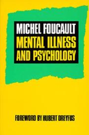

Les couvertures qui manquent
✓ Tes 13 couvertures validées sont EN LIGNE. Elles ont disparu de cette page,
et leurs livres remontent maintenant en tête de leur sujet dans le rayon.
Restent les 38 livres sans image : les 16 que tu as écartées (leur fausse
image est barrée, pour que tu voies quoi ne pas reprendre) et les 22 qui n'ont jamais rien eu.
Colle un lien, l'image s'affiche aussitôt en dessous. Si elle apparaît, je peux la récupérer ;
si elle reste vide, c'est que le site la bloque — prends-en une autre.
Toujours l'édition française. Pas la traduction anglaise, pas
l'édition allemande — c'est le livre que l'équipe a en main qu'il faut reconnaître sur
l'étagère. C'est d'ailleurs une des erreurs du lot automatique : « Essai sur le don »
avait la couverture de son édition allemande, « Die Gabe ».
Santé mentale 9
Souffrance psychique des sans-abri — Vivre ou survivre
Dr Alain Mercuel · Odile Jacob
Je vous salis ma rue — Clinique de la désocialisation
Sylvie Quesemand Zucca · Stock

Maladie mentale et psychologie
Michel Foucault · PUF
Dictionnaire critique de psychiatrie
Barthold Bierens de Haan · Le Hameau

Les névroses — L’homme et ses conflits
· Découvertes de la psychanalyse
Psychopathologie des affects et des conduites chez l’enfant et l’adolescent
Hervé Benony, Christelle Benony-Viodé, Jean Dumas · De Boeck

Si tu m’aimes, ne m’aime pas
Mony Elkaïm ·
Introduction à une psychophysiologie expérimentale
Dr Jacques Ménétrier ·

Psychologie — court traité de philosophie
· Fernand Nathan
Addictions 2
Éduquer face aux drogues et aux dépendances
Georges van der Straten Waillet · Chronique Sociale

La drogue — écrits sur la toxicomanie
Claude Olievenstein · Gallimard
Le terrain 3
Distance et proximité en travail social — Les enjeux de la relation d’accompagnement
Dominique Depenne · ESF, coll. Actions sociales

Dans les coulisses du social
· érès
Pauvreté-Précarité — Aides et adresses utiles
·
Récits 3

Crâne
Patrick Declerck · Gallimard
Natchave
Alain Guyard · Le Dilettante

Le banquier anarchiste
Fernando Pessoa · Titres
Politique 14
Politique & Immensité
Syndicat des Immenses — sous la direction de Laurent d’Ursel et Nicolas Marion · maelstrÖm réEvolution, 2022

Manifeste du Parti communiste
Karl Marx et Friedrich Engels · 1848 — édition Mille et une nuits
La tension anarchiste
Alfredo M. Bonanno ·

La peste religieuse
Johann Most ·
Lettres sur le syndicalisme
Bartolomeo Vanzetti ·

L’art de la guérilla sociale
·
Cryptocommunisme
Mark Alizart · PUF
De la liberté de penser dans un État libre
Spinoza · Carnets de L’Herne
Les utopies anglaises — modèles de coopération sociale et technologique
Werner Plum ·
Et si on en remettait une couche ?
Nadia Geerts ·
Conversation imaginaire entre Diogène et Platon
W. S. Landor · Allia
Les lois fondamentales de la stupidité humaine
Carlo M. Cipolla · PUF
Petit éloge de l’ironie
Vincent Delecroix · Folio 2 €

Matière à réflexion — Pourquoi nous ne savons plus vivre
Alan Watts · Médiations
Comprendre la pauvreté 7

Les pauvres
Georg Simmel · PUF, coll. Quadrige
La discrimination négative
Robert Castel ·

La faim dans le monde expliquée à mon fils
Jean Ziegler · Seuil
Histoire du capitalisme 1500-2010
Michel Beaud · Points

Le travail sans qualités — les conséquences humaines de la flexibilité
Richard Sennett ·

Essai sur le don
Marcel Mauss · PUF, coll. Quadrige
Keynes
Michael Stewart · Points Économie